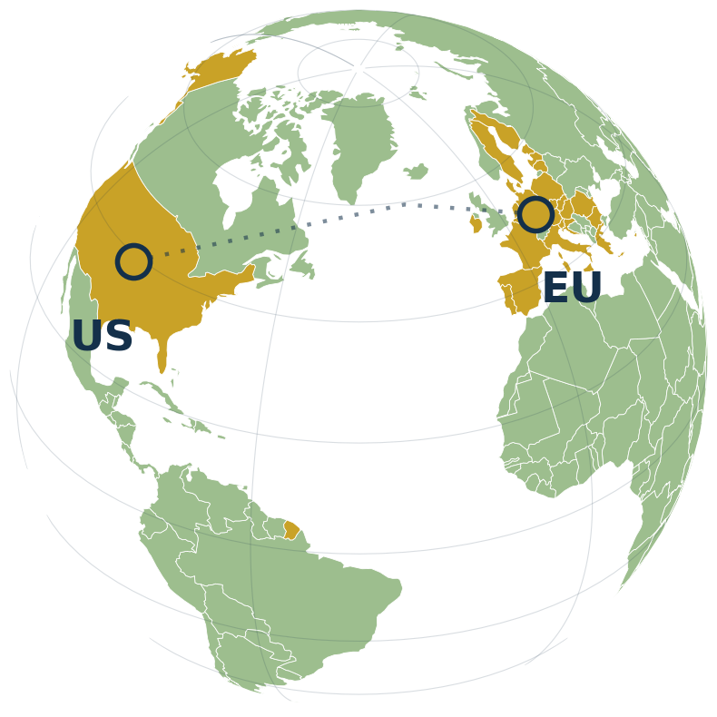

食品接触材料 輸出規制ノート
EU・米国の食品接触材料（樹脂・パッキン・コーティング）規制は、国ごとに枠組みが違い、更新も止まりません。 物質名を入れれば、EUでの扱いをすぐ引ける──そんな実務ノートです。

樹脂メーカーに聞いた添加剤の物質名（英名・和名の一部でも可）か CAS番号を入れるだけ。 EU（Regulation (EU) No 10/2011 Annex I ほか）での扱いと、根拠の条文を返します。
容器メーカーに質問する前に、自分で確認できるレベルの基礎知識です。
EU
樹脂本体はここで OML・SML を規定。ただしパッキンや印刷インキは加盟国ごとの規則に注意。
US
コーティング・接着剤・食品接触物質を個別条項でカバー。物質ごとの許認可状況の確認が要点。
FDA・EUR-Lex の改定を日々ウォッチし、容器・包装に効くものだけを月次で整理して note に公開しています。 容器に影響のない月は全文無料、影響がある月は詳細版として。単発の速報を追いかけるより、要点だけ確実に。
容器・包装業界で、海外輸出に関わる相談を日常的に受けています。特に多いのが「この容器はEU／米国に輸出できるか？」という質問。 しかし規制は複雑で更新も頻繁、情報が体系的にまとまっている場所がほとんどありません。 FCM WATCH は、食品接触材料（樹脂・パッキン・コーティングなど）に関わる EU・米国の規制を、実務目線で整理して発信しています。